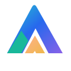

01 / DIGITAL
المواقع والمنصاتWebsites & Platforms
الناتج: موقع تعريفي، صفحة هبوط، متجر أو لوحة تحكم تعمل على الجوال والكمبيوتر.
اطلب موقعًا ↙
AZ9 Digitalنصنع الممكن · We make it possible ابدأ مشروعك ↗Start a projectنحوّل أفكارك إلى مواقع ومنتجات رقمية وأدوات عملية، بخطوات واضحة تناسب المبتدئين وأصحاب الأعمال.
We turn ideas into digital products and practical tools through a clear process built for beginners and businesses.
كل أيقونة تشرح الخدمة باختصار، مع مثال عملي لما يمكن إنتاجه منها.
الناتج: موقع تعريفي، صفحة هبوط، متجر أو لوحة تحكم تعمل على الجوال والكمبيوتر.
اطلب موقعًا ↙الناتج: مساعد للكتابة والتلخيص والبحث والتخطيط، بعد ربط مزود AI مناسب.
شاهد المساعد ↙الناتج: كتالوج منتجات، أسعار، طلبات شراء، ومعلومات منظمة للعميل.
ابدأ متجرًا ↙الناتج: شعار وألوان وخطوط وأيقونات متناسقة قابلة للاستخدام في الموقع والمطبوعات.
طوّر هويتك ↙الناتج: صفحات حملات، محتوى منظم، وأفكار قابلة للاختبار بدل الوعود الفضفاضة.
خطط لحملتك ↙الناتج: نشر موقع، ربط نطاق، وتجميع الخدمات في مسار واضح مع إعدادات آمنة.
جهّز الإطلاق ↙اختر مستوى التنفيذ والميزانية والهدف، واحصل على تقدير أولي ومخرجات مقترحة. الأرقام إرشادية وليست عرض سعر.
حدد خياراتك، ثم أنشئ خريطة تنفيذ مخصصة لفكرتك.
التقدير تنظيمي مبدئي وليس تسعيرًا ملزمًا. المدة والتكلفة الفعلية تتوقفان على النطاق والتكاملات والمحتوى.
عبّئ ثلاثة تفاصيل، وستحصل على موجز منظم وخطوات بداية يمكنك نسخها أو حفظها. يعمل المولّد داخل المتصفح دون حساب.
هذه الأداة تنشئ قالب تخطيط محليًا، وليست خدمة ذكاء اصطناعي متصلة أو دراسة جدوى مالية معتمدة.
اختر نوع المهمة، واكتب المطلوب، ثم اربط الواجهة بمزود ذكاء اصطناعي عند تهيئة الخدمة. لا توجد وعود بأن المساعد متصل قبل إعداد الربط الفعلي.
Choose a task and describe what you need. A provider must be configured before real AI replies are enabled.
واجهة تجريبية فقط. لم يتم ربط مزود ذكاء اصطناعي بعد.Demo only. No AI provider is connected yet.
أمثلة توضيحية لمجالات العمل، وليست ادعاءً بأن هذه المشاريع أُنجزت لعملاء.
تصنيف المنتجات وعرض الأسعار وتجهيز مسار الطلب.
واجهة جوال واضحة لتقديم الخدمات ومتابعة الطلبات.
عرض البيانات والمهام والمؤشرات في مساحة منظمة.
نبدأ بالهدف، وننهي بالاختبار، بدل بناء أشياء جميلة لا تعمل.
نحدد المشكلة والنتيجة المطلوبة.
نرتب الصفحات والمحتوى قبل البرمجة.
نطوّر الحل ونجهّز التكاملات.
نراجع الروابط والجوال وتجربة الاستخدام.
منصة رقمية مستقلة تجمع التصميم والتطوير وأدوات الذكاء الاصطناعي في تجربة واحدة، مع شرح واضح لما هو جاهز وما يحتاج إلى ربط.
An independent digital platform combining design, development, and AI tools with clear, honest product states.
أنشئ ملخصًا منظمًا لطلبك واحفظه أو انسخه. لا تُرسل البيانات إلى خادم في هذه النسخة.